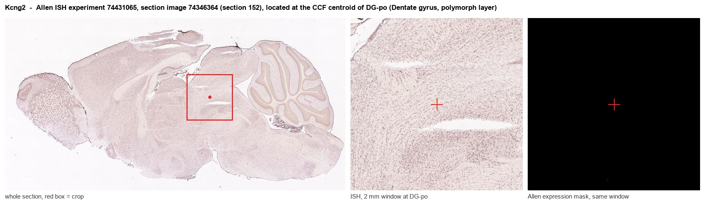
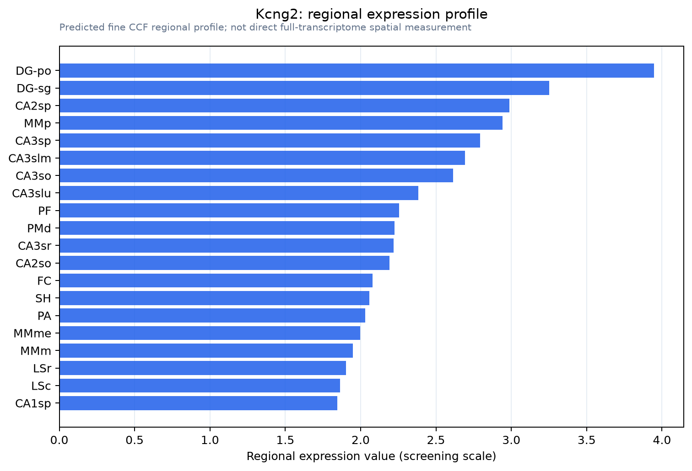

Kcng2
Voltage-gated potassium channel regulatory subunit KCNG2 (Cardiac potassium channel subunit) (Potassium voltage-gated channel subfamily G member 2) (Voltage-gated potassium channel subunit Kv6.2)
Spatial tier: REGION_BIASED · Class: ION_CHANNEL · Top region: DG-po (Dentate gyrus, polymorph layer) · Positive regions: 32/554
Function in DG-po: evidence, prediction, innovation
- Gene function
- Kcng2 encodes Kv6.2, one of ten electrically silent KvS potassium channel subunits. Kv6.2 cannot form homotetramers and stays in the endoplasmic reticulum unless it co-assembles with Kv2.1 or Kv2.2; the resulting heterotetramers reach the surface with more hyperpolarised inactivation and altered pharmacology. KvS subunits are tissue-restricted modifiers of the Kv2 delayed-rectifier current.
- Region function
- The dentate polymorph layer (hilus) houses mossy cells and GABAergic interneurons whose feedback excitation and inhibition of granule cells gate dentate throughput, pattern separation and seizure threshold.
- Published in this region
- none No region-specific literature found. The closest work is Stewart et al. 2025 (eLife), which used a two-inhibitor strategy to show native Kv2/KvS heteromeric conductances exist in mammalian neurons, and Palacio et al. 2017, showing Kv2 expression differs across hippocampal principal-cell types; Allen ISH for Kcng2 in DG-po is at background (energy 0.06, dataset 74431065).
- Predicted function
- Prediction: in hilar mossy cells or interneurons Kv6.2 would hyperpolarise the inactivation range of the local Kv2 delayed rectifier, cutting available potassium current during sustained depolarisation and favouring accommodation-resistant high-frequency firing. Deleting Kcng2 should shift these currents toward the Kv2-only phenotype, narrowing spikes and raising sustained firing, thereby altering feedback inhibition of granule cells and seizure susceptibility.
- Innovation
- ★★★★★ 5/5 Kv6.2 has no published neuronal function in any brain region, let alone the hilus, yet Kv2/KvS pharmacology to test it now exists.
- Tools
- The RY785 plus guangxitoxin-1E combination that discriminates Kv2/KvS from Kv2-only conductances (Stewart 2025); anti-Kv2.1 antibodies for the obligate partner; no validated Kcng2 mouse line or antibody, so AAV-CRISPR knockdown in Calcr-Cre mossy cells is the practical entry point.
- References
Direct evidence located at the region

Allen ISH experiment 74431065, section image 74346364 (section 152): the section that contains the CCF centroid of Dentate gyrus, polymorph layer according to the Allen image-to-atlas alignment (reference_to_image), with a 2 mm window around that point. Left: whole section, red box = window. Middle: ISH signal. Right: Allen's expression-mask view of the same window. open this image in the Allen viewer
Direct spatial evidence

Regional expression figure

Predicted WMB × fine-CCF profile; not direct full-transcriptome spatial measurement.
Spatial profile
Evidence and specificity
- Evidence status
- PREDICTED_FINE
- Direct sources
- None; predicted localization only
- Exclusive threshold
- 12 positive regions out of 554
- Spatial specificity
- 0.326
- Top-region fraction
- 0.049
- Filter status
- PASS
Interpretation limits
- Cell-type-to-region projection is imputed expression, not direct spatial measurement.
- Adult reference atlases do not establish stability across age, sex, strain, state, or disease.
- Transcript abundance does not guarantee protein abundance or genetic-tool performance.